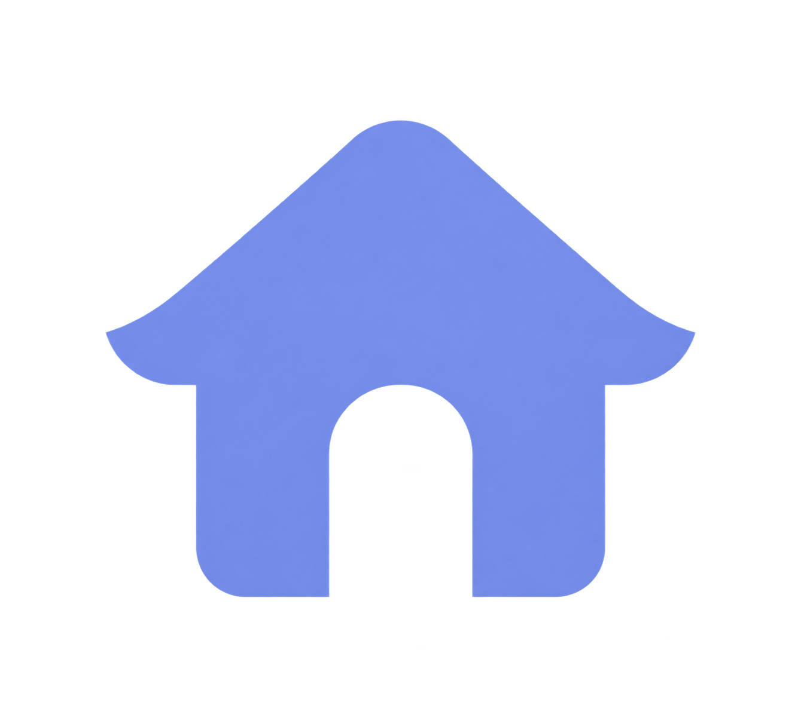
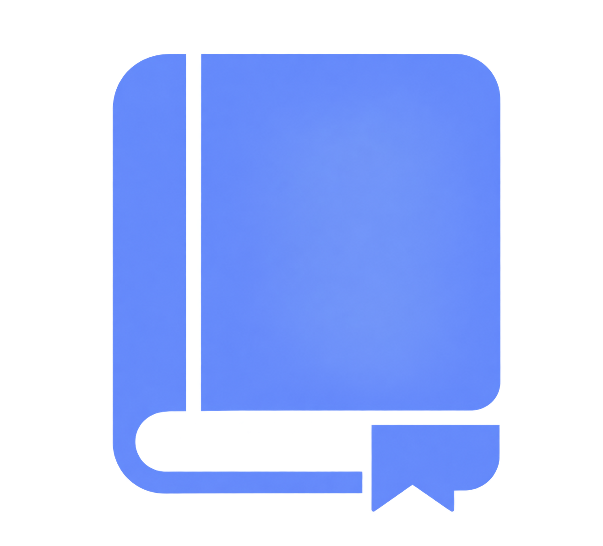
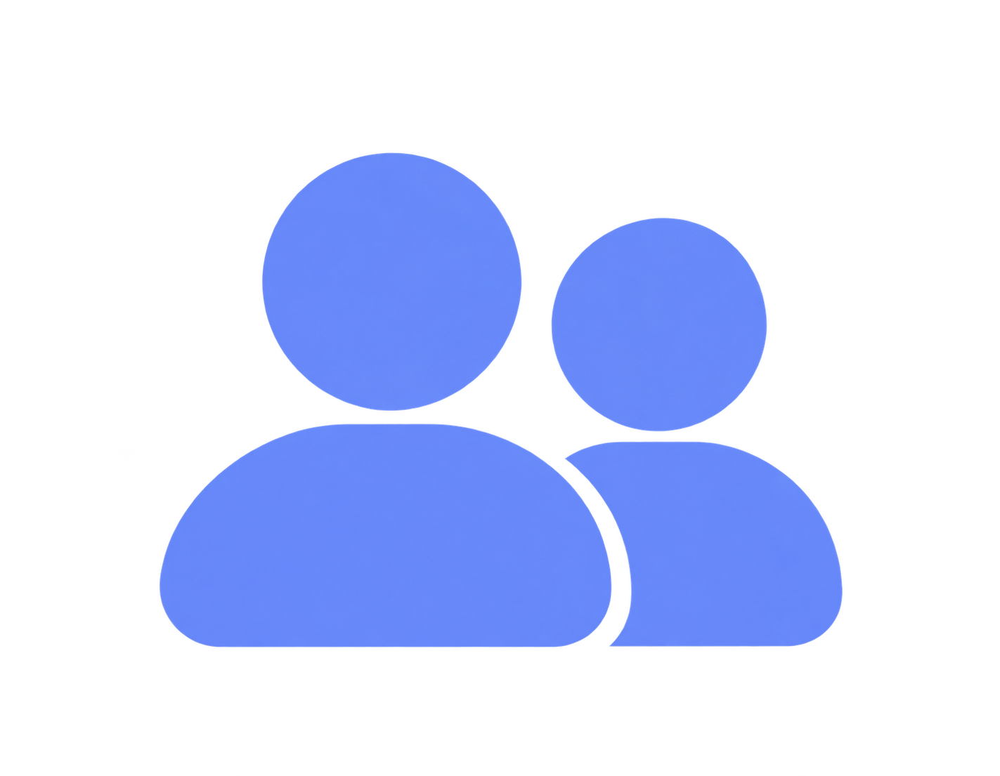

<title>Uni4Read</title>
<aside class="sidebar">

  
    <div class="sidebar-logo">
        
    </div>

 
    <button class="add-book-button">
        <span class="add-icon">+</span>
        <span>Adicionar livro</span>
    </button>

    
    <nav class="sidebar-menu">

        <a href="feed.html" class="sidebar-item active">
            <span class="sidebar-icon">
                
            </span>
            <span>Feed</span>
        </a>

        <a href="lidos.html" class="sidebar-item">
            <span class="sidebar-icon">
                
            </span>
            <span>Lidos</span>
        </a>

        <a href="lendo.html" class="sidebar-item">
            <span class="sidebar-icon">
                
            </span>
            <span>Lendo</span>
        </a>

        <a href="amigos.html" class="sidebar-item">
            <span class="sidebar-icon">
                
            </span>
            <span>Amigos</span>
        </a>

    </nav>


    <div class="sidebar-bottom">
        <button class="profile-button">
            <span>👤</span>
            <span>Perfil</span>
        </button>
    </div>

</aside>


<main class="main">

    <section class="content">

        <div class="page-header">
            <h1>Feed</h1>
        </div>

        <div class="empty-state">
            <h2>Nenhum livro por aqui</h2>
            <p>Adicione um livro para começar a montar seu feed.</p>
        </div>

    </section>

</main>
